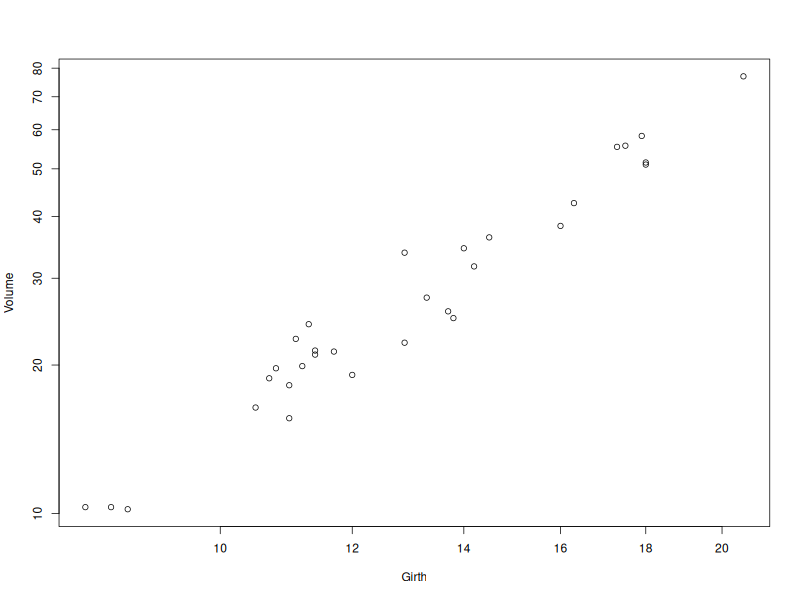

\(\newcommand{\VS}{\quad \mathrm{VS} \quad}\) \(\newcommand{\and}{\quad \mathrm{and} \quad}\) \(\newcommand{\E}{\mathbb E}\) \(\newcommand{\P}{\mathbb P}\) \(\newcommand{\Var}{\mathbb V}\) \(\newcommand{\1}{\mathbf 1}\)
We observe \(Y \in \mathbb R^{n\times 1}\) and \(X \in \mathbb R^{n \times p}\).
What is the best estimator \(\hat \beta\) of \(\beta\) such that \(Y = X\beta + \varepsilon\)?
Ordinary Least Square (OLS) Estimator:
\(\newcommand{\argmin}{\mathrm{argmin}}\)
\[\hat \beta = \argmin_{\beta'}\|Y-X\beta'\|^2\]
Here, \(\|Y-X\beta'\|^2 = \sum_{i=1}^n(Y_i-\beta_1X_{i}^{(1)}- \dots - \beta_pX_i^{(p)})\)
If \(\mathrm{rk}(X) = p\), it holds that
\[\hat \beta = (X^TX)^{-1}X^TY\]
\(X\hat \beta = X(X^TX)^{-1}X^TY\) is the projection of \(Y\) on the space generated by columns of \(X\): \[[X]=\mathrm{Im}(X)=\mathrm{Span}(X^{(1)},\dots, X^{(p)})=\{X\alpha, \alpha \in \mathbb R^p\}\]
\[P_{[X]} = X(X^TX)^{-1}X^T \and \widehat{Y} = P_{[X]}Y = X\hat \beta\]
Check that \(P_{[X]}\) is the orthogonal projector on \([X]\)
That is \(P_{[X]}^2 = P_{[X]}\), \(P_{[X]}=P_{[X]}^T\) and \(\mathrm{Im} (P_{[X]}) = [X]\)
Or, without computation:
\(P_{[X]}Y\) minimizes \(\|Y-Y'\|^2\) over all \(Y' \in [X]\).
So \(P_{[X]}Y\) must be the orthogonal projection by Pythagorean theorem
We can decompose
\[Y = \underbrace{P_{[X]}Y}_{\widehat Y} + \underbrace{(I-P_{[X]})Y}_{"residuals"}\]
Notice that \(I-P_{[X]}= P_{[X]^{\perp}}\) is the orthogonal projection on \([X]^{\perp} = \{\alpha\in \mathbb R^p:~ X\alpha =0\}\)
(image: elements of statistical learning. In yellow: \([X]\) with \(p=2\))
Expectation and variance
Assume that \(rk(X)=p\), \(\mathbb E[\varepsilon] = 0\) and \(\mathbb V(\varepsilon) = \sigma^2I_n\). Then,
Gauss-Markov Theorem
Under the same assumptions, if \(\tilde \beta\) is another linear and unbiased estimator then \[\mathbb V(\hat \beta) \preceq \mathbb V(\tilde \beta),\]
where \(A\preceq B\) means that \(B-A\) is a symmetric positive semidefinite matrix Elements of proof
We define the residuals \(\hat \varepsilon\) as
\[ \hat \varepsilon = Y- \hat Y = Y-X\hat \beta \]
It can be computed from the data.
It is the orthogonal projection of \(Y\) on \([X]^{\perp}\):
\[Y = \underbrace{P_{[X]}Y}_{\widehat Y} + \underbrace{(I-P_{[X]})Y}_{\hat \varepsilon="residuals"}\]
\[ \begin{aligned} Y &= X\beta + \varepsilon & \quad \text{(model)} \\ Y &= \widehat Y + \hat \varepsilon & \quad \text{(estimation)} \end{aligned} \]
Expectation and Variance of \(\hat\varepsilon\)
If \(rk(X)=p\), \(\mathbb E[\varepsilon] = 0\) and \(\mathbb V(\varepsilon)=\sigma^2I_n\), then
Remark: if a constant vector is in \([X]\), e.g. \(\forall i,X_i^{(1)}=1\), then \(\hat \varepsilon \perp \mathbf 1\) and
\[ \overline{\hat\varepsilon} = \frac{1}{n}\sum_{i=1}^n \varepsilon_i = 0 \and \overline{\widehat Y} = \overline Y \]
Recall that in the model \(Y=X\beta + \varepsilon\), both \(\beta\) and \(\sigma^2=\mathbb E[\varepsilon_i^2]\) are unknown (\(p+1\) parameters)
\[ \hat\varepsilon = Y- \hat Y = P_{[X]^\perp}\varepsilon \and dim([X]^{\perp}) = =n-p \]
We estimate \(\sigma^2\) with
\[\hat \sigma^2 = \frac{1}{n-p}\sum_{i=1}^n \hat \varepsilon_i^2\]
Proposition
If \(rk(X)=p\), \(\E[\varepsilon]=0\) and \(\Var(\varepsilon)= \sigma^2I_n\), then
\[\hat \sigma^2 = \frac{1}{n-p}\sum_{i=1}^n \hat \varepsilon_i^2=\frac{\mathrm{SSR}}{n-p}\]
is an unbiased estimator of \(\sigma^2\). If moreover the \(\varepsilon_i\)’s are iid, then \(\hat \sigma^2\) is a consistent estimator.
Until then, we assumed that \(Y=X\beta+\varepsilon\), where \(\E[\varepsilon]=0\) and \(\Var(\varepsilon)= \sigma^2I_n\).
The \(\varepsilon_i\) are uncorrelated but there can be dependency
No assumption was made on the distribution of \(\varepsilon\)
Now (Gaussian Model):
\[\varepsilon \sim \mathcal N(0, \sigma^2I_n) \quad \text{i.e.} \quad Y \sim \mathcal N(X\beta, \sigma^2I_n)\]
Equivalently we assume that the \(\varepsilon_i\)’s are iid \(\mathcal N(0, \sigma^2)\).
In this simpler model, we can do maximum likelihood estimation (MLE)!
MLE
Let \(\hat \beta_{MLE}\) and \(\hat \sigma_{MLE}^2\) be the MLE of \(\beta\) and \(\sigma^2\), respectively.
\(\hat{\beta}_{MLE} = \hat{\beta}\) et \(\hat{\sigma}^2_{MLE} = \frac{SCR}{n} = \frac{n-p}{n} \hat{\sigma}^2\).
\(\hat{\beta} \sim N(\beta, \sigma^2(X^TX)^{-1})\).
\(\frac{n-p}{\sigma^2} \hat{\sigma}^2 = \frac{n}{\sigma^2} \hat{\sigma}^2_{MLE} \sim \chi^2(n - p)\).
\(\hat{\beta}\) and \(\hat{\sigma}^2\) are independent
Theorem
In the Gaussian Model, \(\hat \beta\) is an efficient estimator of \(\hat \beta\). This means that \[ \Var(\hat \beta) \preceq \Var(\tilde \beta)\; , \] for any estimator \(\tilde \beta\). See Elements of proof
Recall that \(\hat \sigma^2 = \frac{1}{n-p}\|\hat \varepsilon\|^2\)
Property
In the Gaussian model,
\[ \frac{\hat \beta_j - \beta_j}{\hat \sigma \sqrt{(X^T X)^{-1}_{jj}}} \sim \mathcal T(n-p) \]
(Student Distribution of degree \(n-p\), \((X^TX)^{-1}_{jj}\) is the \(j^{th}\) element of the matrix \((X^TX)^{-1}\))
\(\mathbb V(\hat{\beta}) = \sigma^2 (X^T X)^{-1}\) implies that \(\mathbb V(\hat{\beta}_j) = \sigma^2 (X^T X)^{-1}_{jj}\). \(\hat{\sigma}^2_{\hat{\beta}_j}:=\hat\sigma^2 (X^T X)^{-1}\) is an estimator of \(\sqrt{\mathbb V(\hat{\beta}_j)}\)
We observe \(Y = X\beta+\varepsilon\), where \(\beta \in \mathbb R^p\) is unknown.
We want to test whether the \(j^{th}\) feature \(X^{(j)}\) is significant in the LM, that is:
\(H_0: \beta_j =0 \VS H_1: \beta_j \neq 0\).
We use the test statistic
\[\psi_j(X,Y)= \frac{\hat \beta_j}{\hat \sigma_{\hat \beta_j}} = \frac{\hat \beta_j}{\hat \sigma \sqrt{(X^T X)^{-1}_{jj}}} \sim \mathcal T(n-p) ~~\text{(under $H_0$)}\]
\[\psi_j(X,Y)= \frac{\hat \beta_j}{\hat \sigma_{\hat \beta_j}} = \frac{\hat \beta_j}{\hat \sigma \sqrt{(X^T X)^{-1}_{jj}}} \sim \mathcal T(n-p) ~~\text{(under $H_0$)}\]
We reject if \(|\psi(X,Y)| \geq t_{1-\alpha/2}\), where \(t_{\alpha}\) is the \(\alpha\)-quantile of \(\mathcal T(n-p)\).
\[p_{value}=2\min(F(\psi_j(X,Y)), 1-F(\psi_j(X,Y)))\]
where \(F\) is the cdf of \(\mathcal T(n-p)\).
If we get \(\beta_j=0\), we can remove \(X^{(j)}\) from the model.
Confidence interval with proba \(1-\alpha\) around \(\beta_j\):
\[CI_{1-\alpha} = [\hat \beta_j \pm t\hat \sigma_{\hat \beta_j}]\]
We check that
\[ \P(\beta \in CI_{1-\alpha}) = 1- \alpha \]
Consider the LM \(Y = X\beta + \varepsilon\).
From previous slides, we estimate \((\beta, \sigma)\) with \((\hat \beta, \hat \sigma)\) from observations \(Y\) and matrix \(X=(X^{(1)}, \dots, X^{(p)})\).
We observe a new individual \(o\), with unknown \(Y_o\) and vector \(X_o=X_{o,\cdot}=(X^{(1)}_o, \dots, X^{(p)}_o)\), and independent noise \(\varepsilon_o\).
with this definition, \(X_o\) is a row vector and
\[Y_o = X_{o}\beta + \varepsilon_o = \beta_1X^{(1)}_o + \dots + \beta_p X^{(p)}_o+\varepsilon_o\]
Here, \(\mathbb E[\varepsilon_o] = 0\) and \(\mathbb V(\varepsilon_o)=\sigma^2\)
We want predict \(Y_o\) (unknown) from \(X_o\) (known). Natural predictor:
\(\hat Y_o = X_o \hat \beta + \varepsilon_o\)
Prediction error \(Y_o - \hat Y_o\) decomposes in two terms:
\[Y_o - \hat Y_o = \underbrace{X_o(\beta - \hat \beta)}_{\text{Estimation error}} + \underbrace{\varepsilon_o}_{\text{Random error}}\]
\[Y_o - \hat Y_o = \underbrace{X_o(\beta - \hat \beta)}_{\text{Estimation error}} + \underbrace{\varepsilon_o}_{\text{Random error}}\]
\(\E(Y_o - \hat Y_o)\): prediction error is \(0\) on average
\[\begin{aligned} \Var(Y_o - \hat Y_o) &= \color{blue}{ \Var(X_o(\beta - \hat \beta))} + \color{red}{\Var(\varepsilon_o)} \\ &=\color{blue}{\sigma^2X_o(X^TX)^{-1}X_o} + \color{red}{\sigma^2} \\ \end{aligned}\]
\(\color{blue}{\Var(X_o(\beta - \hat \beta))\to 0}\) when \(n \to +\infty\) but \(\color{red}{\Var(\varepsilon_o) =\sigma^2}\)
Estimation error is negligible when \(n \to +\infty\) but random error is incompressible.
In the Gaussian model, \(Y_o - \hat Y_o \sim \mathcal N(0, \sigma^2X_o(X^TX)^{-1}X_o^T+\sigma^2)\).
Since \(\hat \sigma\) is indep of \(\hat Y_o\) (check this with projections!),
\[\frac{Y_o - \hat Y_o}{\hat \sigma\sqrt{X_o(X^TX)^{-1}X_o^T+1}} \sim \mathcal T(n-p)\]
We deduce the prediction interval
\[PI_{1-\alpha}(Y_o)=\left[\hat Y_o \pm \sqrt{\color{blue}{\hat \sigma^2X_o(X^TX)^{-1}X_o^T} + \color{red}{\hat \sigma^2}}\right]\]
such that \(\P(Y_o \in PI_{1-\alpha})= 1-\alpha\)
If we only want to estimate \(\mathbb E[Y_o]=X_o \beta\), (point on the hyperplane), we get the confidence interval
\[CI_{1-\alpha}(X_o\beta)=\left[\hat Y_o \pm \sqrt{\color{blue}{\hat \sigma^2X_o(X^TX)^{-1}X_o^T}}\right]\]
For 100 trees, we record their volume and their girth.

Volume = \(\beta_1\) + \(\beta_2\) Girth + \(\varepsilon\)
Coefficients:
Estimate Std. Error t value Pr(>|t|)
(Intercept) -36.9435 3.3651 -10.98 7.62e-12 ***
Girth 5.0659 0.2474 20.48 < 2e-16 ***
---
Signif. codes: 0 ‘***’ 0.001 ‘**’ 0.01 ‘*’ 0.05 ‘.’ 0.1 ‘ ’ 1
Residual standard error: 4.252 on 29 degrees of freedomEstimation:
\[\hat \beta_1=-36.9 \and \hat \beta_2=5.07\] \[\hat \sigma_{\hat \beta_1} =3.4 \and \hat \sigma_{\hat \beta_2} =0.25\]
Statistics:
\[\frac{\hat \beta_1}{\hat \sigma_{\hat \beta_1}}=-10.98 \and \frac{\hat \beta_2}{\hat \sigma_{\hat \beta_2}}=20.48\]
\(Pr(>|t|)\): pvalues of the student tests. Last row: \(\hat \sigma=4.25\) and df.
require(stats); require(graphics)
pairs(trees, main = "trees data")
trees[,c("Girth", "Volume")]
reg <- lm(Volume ~ Girth, data = trees)
# Create sequence of x values for smooth curves
x_seq <- seq(min(trees$Girth), max(trees$Girth), length.out = 100)
# Calculate confidence and prediction intervals
conf_int <- predict(reg, newdata = data.frame(Girth = x_seq),
interval = "confidence", level = 0.95)
pred_int <- predict(reg, newdata = data.frame(Girth = x_seq),
interval = "prediction", level = 0.95)